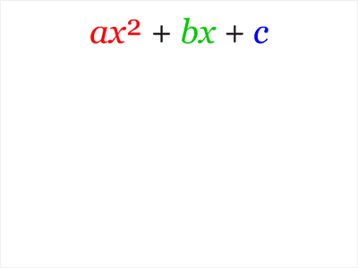

A whirlwind Precalc Review
M 111
Oxford College of Emory University Tien Chih
A function is a mapping or rule \(f\) assigning each element of a domain to another set called a co-domain.
We denote a function \(f\) mapping from a domain \(X\) to a co-domain \(Y\) with \(f:X\to Y\).
If whenever \(x\neq y\) we have that \(f(x)\neq f(y)\), then we say that \(f\) is 1-1 or injective. (Or a monomorphism for the truly fancy).
An injective function:
If whenever \(x\neq y\) we have that \(f(x)\neq f(y)\), then we say that \(f\) is 1-1 or injective. (Or a monomorphism for the truly fancy).
NOT an injective function:
If for each \(z\) in the co-domain, there is a \(x\) in the domain so that \(f(x)=z\), then we say that \(f\) is onto or surjective. (Or an epimorphism for the truly fancy).
A surjective function:
If for each \(z\) in the co-domain, there is a \(x\) in the domain so that \(f(x)=z\), then we say that \(f\) is onto or surjective. (Or an epimorphism for the truly fancy).
NOT a surjective function:
If \(f\) is both injective and surjective, we say that it is a bijection.
A bijective function:
NOT ALLOWED
A function with a constant rate of change is called a linear function.
A linear function written in slope-intercept or \(y=mx+b\) form has slope \(m\) and \(y\)-intercept \(b\).
A function with a constant rate of change is called a linear function.
A linear function written in point-slope or \(y=m(x-x_0)+y_0\) form has slope \(m\) passes through \((x_0, y_0)\)-intercept \(b\).
Find a linear function passing through \((2,3)\) with slope \(-1\).
Find a linear function passing through \((-4,-1)\) and \(1, 2\).
A function of the form \(q(x)=ax^2+bx+c, a\neq0\) is called a quadratic function.
Notice that \(q(x)=ax^2+bx+c = a\left(x-\frac{b}{2a} \right)^2 +c-\frac{b^2}{4a} = a(x-h)^2+k \). This is the vertex form.

Notice that \(q(x)=ax^2+bx+c = a\left(x-\frac{b}{2a} \right)^2 +c-\frac{b^2}{4a} = a(x-h)^2+k \). This is the vertex form.
Find the vertex form for \(y=2x^2+4x-1\).
A function of the form \(p(x)=a_nx^n+a_{n-1}x^{n-1}+\cdots a_1x^1+a_0x^0 = \displaystyle \sum_{i=0}^n a_ix^i, a_n\leq 0\) is called a polynomial function.
For \(p(x)=a_nx^n+a_{n-1}x^{n-1}+\cdots a_1x^1+a_0x^0, a_n\leq 0\), \(a_n\) is the leading coefficient, \(n\) is the degree, and \(a_nx^n\) is the leading term.
The leading term determines the long term behavior
of a polynomial
For \(p(x)=a(x-x_1)^{n_1}(x-x_2)^{n_2}\cdots(x-x_k)^{n_k}\), \(x_i\) are the roots of \(p(x)\) with multiplicity \(n_i\).
A function of the form \(r(x)=\frac{p(x)}{q(x)}\) where \(p(x), q(x)\) are polynomials is called a rational function.
A function of the form \(f(x)=b\cdot a^x\) is called an exponential function.
\(b\) is the \(y\)-intercept and \(a\) is the growth factor.
Find an exponential function passing through \( (1,2) \) and \( (3,4) \)
Since \(f(x)=a^x\) is an injective function it has an inverse \(\log_a(x)\). The inverse of \(f(x)=e^x\) is \(\ln(x)\).
Since \(a^b\cdot a^c=a^{b+c}\) we have \[a^{\log_a\left( bc \right)} = bc =a^{\log_a(b)}a^{\log_a(c)}=a^{\log_a(b)+\log_b(c)} \] so that \[\log_a\left( bc \right) = \log_a(b)+\log_b(c).\]
Since \(\left(a^b\right)^c =a^{bc}\) we have \[a^{\log_a\left( b^c \right)} = b^c =\left(a^{\log_a(b)} \right)^c=a^{c\log_a(b)}. \] so that \[\log_a(b^c) = c\log_a(b).\]
Solve \(5=2^x\).
Solve \(\frac{1}{4}=(0.9)^{3x}\).
All trigonometric functions are based on ratios of sides of triangles, particularly on the unit circle.
\(\cos(\theta), \sin(\theta)\) are the \(x, y\) coordinates of the corresponding points on the unit circle.
\(\tan(\theta)\) is the slope of the corresponding line.
Important Identities:
- \(\sin^2(x)+\cos^2(x)=1\).
- \(\tan^2(x)+1=\sec^2(x)\).
- \(1+\cot^2(x)=\csc^2(x)\).
- \(\sin(2x)=2\sin(x)\cos(x)\).
- \(\cos(2x)=\cos^2(x)-\sin^2(x)\).
Each trigonometric function has an inverse (with an appropriate restricted domain).
Trig functions take angles to ratios. Inverse functions take ratios to angles.
Find \(\tan(\arcsin(x))\).
Find \(\cos(\arctan(2x^2))\).
If the codomain of \(f\) is the domain of \(g\) we may compose \(g\circ f(x)=g(f(x))\)

Let \(f(x)=x^2+x+3, g(x)=2x-1\), find:
- \(g(f(x))\).
- \(g(g(x))\).
- \(f(x+2)\).
- \(g(x+2)\).
- \(f(x+h)\).
- \(g(x+h)\).